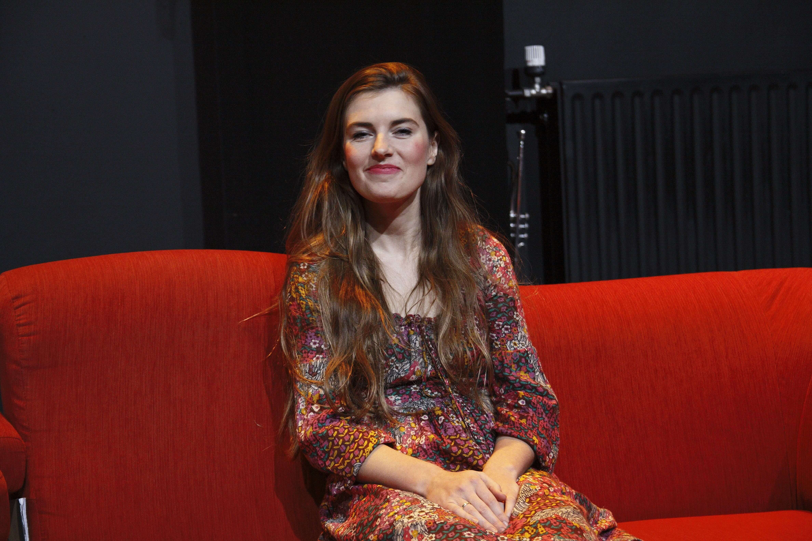
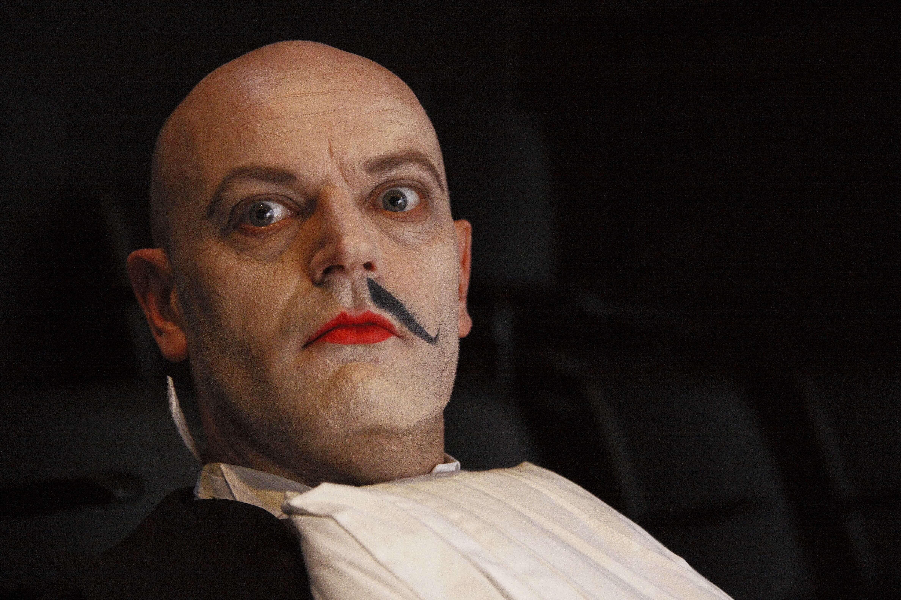
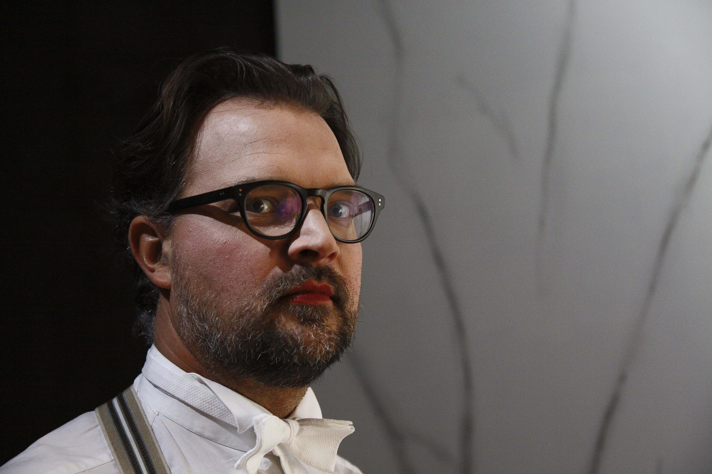
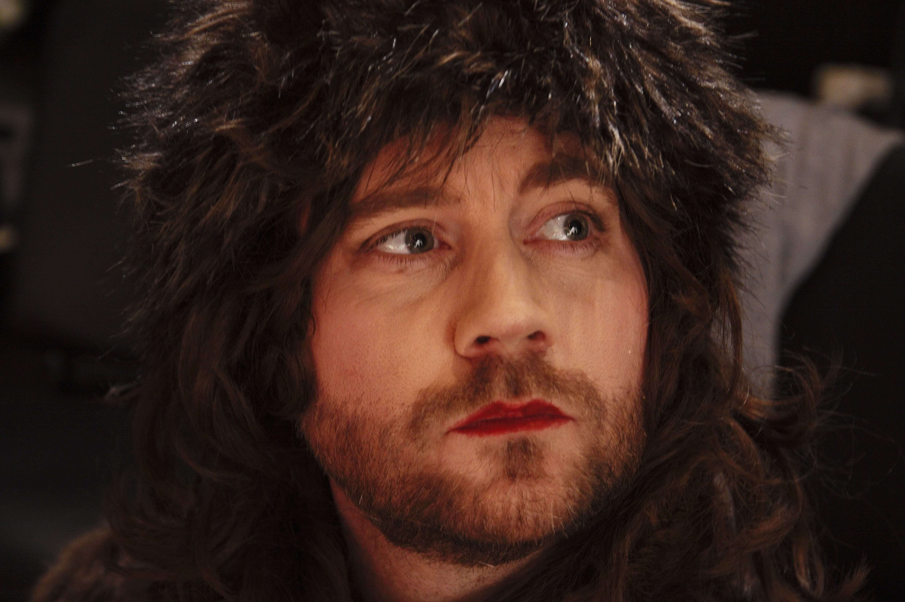
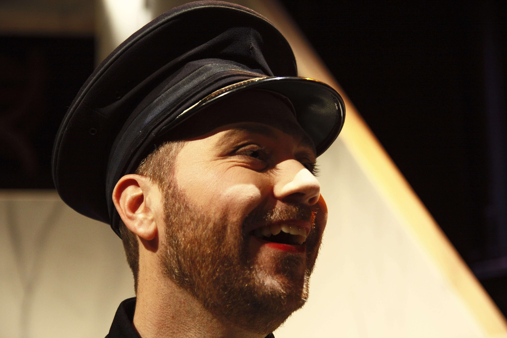
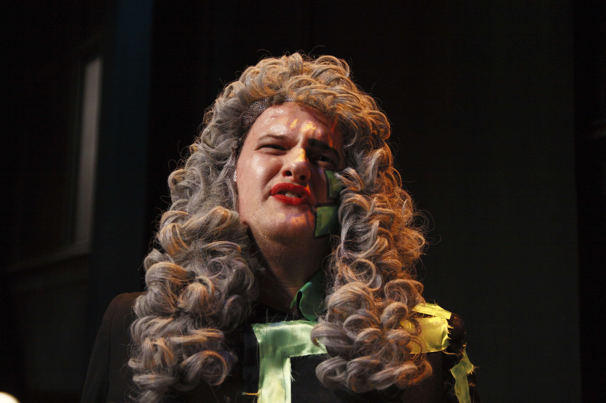

Naam: Eric Vermeer
functie: Toneelspeler
Bio: Hoi! Toen ik een kleine
jongen was speelde mijn vader
altijd toneel, nu volg ik in
zijn voetstappen

Naam: Arthur Klein
functie: Toneelspeler
Bio: Mijn vrouw en ik hebben
een diepe passie voor acteren,
vandaar dat we nu samen bij
theater Imperium spelen

Naam: Rens Goedknecht
functie: Toneelspeler
Bio: Ik heb altijd al
beroemd willen worden,
theater Imperium is mijn
kans

Naam: Anna Handkraag
functie: Toneelspeler
Bio: Ik vind het gewoon
fantastisch om met zoveel
leuke mensen samen een
toneelstuk te doen

Naam: Michiel Hopman
functie: Toneelspeler
Bio: Als leraar aan de
haagse hogeschool mis ik
vaak de passie die ik vind
in toneel, maar gelukkig
heb ik theater Imperium

Naam: Leon Schroder
functie: Regisseur
Bio: Toneel is mijn liefde
alleen vind ik zelf het
organiseren leuker dan het
spelen

Naam: Sebastiaan kat
functie: Toneelspeler
Bio: Ik hoop vooral gewoon
vrouwen over te winnen,
mijn broer zei dat toneel-
spelers wel succes hadden
bij de vrouwen

Naam: Rick Woldhuis
functie: Toneelspeler
Bio: Ik vind acteren echt
fantastisch, Toneelgroep
Imperium is dus echt mijn
redder in nood

Naam: Melvin Gijsberts
functie: Toneelspeler
Bio: Toneel is de enige manier
om mezelf te verkleden en
te worden hoe ik wil zijn,
gelukkig heb ik daarvoor
Theater Imperium